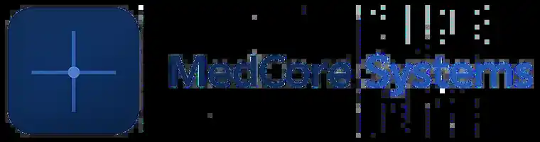

Healthcare technology / Entrepreneurship
MedCore Systems
A healthcare technology startup focused on building software solutions for medical environments, co-founded in June 2026 by Adrian Moroianu, Cristina Danilov and Alexandru Neacsu.

Open full-resolution logo ↗
The venture
Software for medical environments.
MedCore Systems brings together technical product development and clinical expertise. The company is currently focused on an AI-assisted medical software solution for neurology.
The public portfolio description stays intentionally high level. Product internals, clinical-development details, data-access work and commercial strategy remain outside this case study.
Co-foundedBuilt together with Cristina Danilov and Alexandru Neacsu.
Healthcare focusSoftware products designed around real medical environments.
Cross-disciplinaryClinical knowledge, software engineering, AI and data science.
Current directionAI-assisted medical software for the neurology domain.